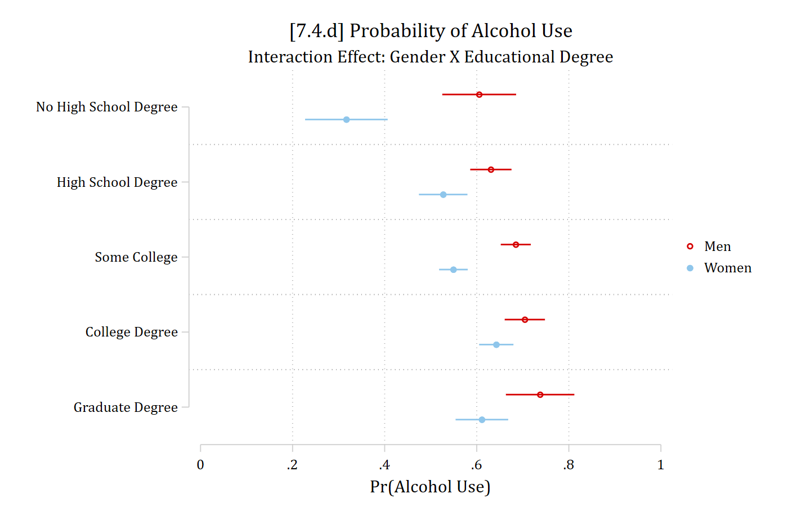

Interactions with two nominal variables are usually the easiest to handle because there are not multiple values of the IV to consider: e.g., for a binary variable like college, you should make tests at 0 and 1
Tables sometimes suffice to convey this information
Still a good idea to make a plot for your own understanding, regardless of whether it ends up in your paper or not
Direction of effects and effect size is easier to understand visually than in a table
As with all nonlinear interaction effects, rely on tests of the second difference and ignore the coefficient on the interaction (product) term
Ex: nominal X nominal interactions
Following examples from Add Health Wave 4 (young adults):
library(haven) # import Stata data and labelslibrary(dplyr) # data manipulationlibrary(ggplot2) # graphslibrary(sjmisc) # frequency tableslibrary(marginaleffects) # predictions and marginal effectslibrary(cleanplots) # graph schemecleanplots_defaults()ah4 <-read_dta("https://tdmize.github.io/data/data/addhealth4.dta")frq(ah4, alcB)
*7.4.b - Bar chart with coefplot; parental status bars within gender*NOTE: Need to make and store predictions separately for those with and without*children for plot to have different colors for parents/non-parentsestrestore alcmod
(results alcmod are active now)
qui margins, at(woman=(0 1) parrole=(0)) posteststore prnokidestrestore alcmod
(results alcmod are active now)
qui margins, at(woman=(0 1) parrole=(1)) posteststore prkidscoefplot prnokid prkids, ///recast(bar) vertical barw(0.3) ciopts(recast(rcap) color(gs10)) /// citop level(68) ylab(0(.1)1) xlab(1 "Men" 2 "Women") ///legend(order(1 "No Children" 3 "Parents")) ///ytitle("Pr(Alcohol Use)") scale(1.1) ///title("[7.4.b] Probability of Alcohol Use Based on Gender and Parental Status")
For a bar chart in R, save avg_predictions and pass to ggplot
# 7.4.b - Bar chart; parental status bars within gender, with SE bars (68% CIs)pr <-avg_predictions(alc, by =c("woman", "parrole"), conf_level = .68,newdata =datagrid(woman = unique, parrole = unique, grid_type ="counterfactual"))ggplot(pr, aes(x = woman, y = estimate, fill = parrole)) +geom_col(position =position_dodge(.7), width = .6) +geom_errorbar(aes(ymin = conf.low, ymax = conf.high), color ="gray60",position =position_dodge(.7), width = .1) +scale_y_continuous(breaks =seq(0, 1, .1), limits =c(0, 1)) +labs(title ="[7.4.b] Probability of Alcohol Use Based on Gender and Parental Status",x =NULL, y ="Pr(Alcohol Use)", fill =NULL)
# MEs for effect of parenthood, by genderavg_comparisons(alc, variables ="parrole", by ="woman",newdata =datagrid(woman = unique, grid_type ="counterfactual"))
woman Estimate Std. Error z Pr(>|z|) S 2.5 % 97.5 %
Man -0.0935 0.0227 -4.12 <0.001 14.7 -0.138 -0.049
Woman -0.1753 0.0211 -8.32 <0.001 53.3 -0.217 -0.134
Term: parrole
Type: response
Comparison: Parent - No Children
# 2nd difference: if parenthood has same effect for men and womenavg_comparisons(alc, variables ="parrole", by ="woman",newdata =datagrid(woman = unique, grid_type ="counterfactual"),hypothesis ="b2 - b1 = 0")
Both men and women are less likely to drink alcohol if they are parents (both MEs p < 0.001). However, parenthood has a stronger negative effect on the probability of alcohol use for women (∆women = -0.175) than it does for men (∆men = -0.093; second difference = 0.082, p < 0.01).
Nominal X nominal interactions (multi-category IVs)
Testing for interaction is no more difficult when your nominal IV has more than two categories. However, the number of contrasts to present and test increase rapidly
*7.4.d - a dot plot with coefplotestrestore alcedmod
(results alcedmod are active now)
qui margins educ, at(woman=0) posteststore menprsestrestore alcedmod
(results alcedmod are active now)
qui margins educ, at(woman=1) posteststore womprs*NOTE: Quirk is CIs are actually the 1st and 3rd thing being plotted;* forlegend, label the 2nd and 4th (the markers)coefplot menprs womprs, ///xtitle("Pr(Alcohol Use)") xlab(0(0.2)1) ///title("[7.4.d] Probability of Alcohol Use", size(medium)) ///subtitle("Interaction Effect: Gender X Educational Degree") ///legend(order(2 "Men" 4 "Women"))

# 7.4.d - a dot plotpr2 <-avg_predictions(alc2, by =c("educ", "woman"),newdata =datagrid(educ = unique, woman = unique, grid_type ="counterfactual"))ggplot(pr2, aes(x = estimate, y = educ, color = woman)) +geom_pointrange(aes(xmin = conf.low, xmax = conf.high),position =position_dodge(.4)) +scale_y_discrete(limits = rev) +scale_x_continuous(breaks =seq(0, 1, .2), limits =c(0, 1)) +labs(title ="[7.4.d] Probability of Alcohol Use",subtitle ="Interaction Effect: Gender X Educational Degree",x ="Pr(Alcohol Use)", y =NULL, color =NULL)
# MEs (1st differences)avg_comparisons(alc2, variables ="woman", by ="educ",newdata =datagrid(educ = unique, grid_type ="counterfactual"))
educ Estimate Std. Error z Pr(>|z|) S 2.5 % 97.5 %
No High School Degree -0.288 0.0610 -4.73 < 0.001 18.7 -0.408 -0.16882
High School Degree -0.104 0.0353 -2.93 0.00335 8.2 -0.173 -0.03438
Some College -0.136 0.0232 -5.83 < 0.001 27.5 -0.181 -0.09000
College Degree -0.062 0.0290 -2.13 0.03286 4.9 -0.119 -0.00505
Graduate Degree -0.126 0.0475 -2.66 0.00781 7.0 -0.220 -0.03328
Term: woman
Type: response
Comparison: Woman - Man
For joint test, ask for 2nd diffs with hypothesis = ~reference and save as object
Then, test equality with hypotheses and option joint = TRUE
# Start with a joint test of equality of all MEsdiffs <-avg_comparisons(alc2, variables ="woman", by ="educ",newdata =datagrid(educ = unique, grid_type ="counterfactual"),hypothesis =~ reference)hypotheses(diffs, joint =TRUE, joint_test ="chisq")
# If a specific 2nd diff is hypothesized, test that directlyavg_comparisons(alc2, variables ="woman", by ="educ",newdata =datagrid(educ = unique, grid_type ="counterfactual"),hypothesis ="b2 - b1 = 0")
The gender gap, with women less likely to drink than men, is larger for those without a high school degree (MEwoman = -0.288) than for those with a high school degree (MEwoman = -0.104; 2nd diff. = 0.185, p < .01).
If you test for all 2nd differences, beware of Type I errors (false positives), and consider correcting the p-values for multiple comparisons (Mize and Han 2025)
Or, use an ME inequality to determine interaction (see below)
Sometimes, interest is in a nominal IV as a holistic construct
Consider these research questions
RQ: In the labor market, is there more racial-ethnic inequality among men or among women?
RQ: Has the role of religion in patterning social attitudes declined in recent years?
For these examples, race-ethnicity and religion as overall constructs are the focal IVs; not predicting specific category vs category comparisons
A benefit of using the ME inequality is it provides a single test and answer to the research question / hypothesis, so has no issue with multiple comparisons
The unweighted ME inequality* is simply the average of the (absolute values) of all pairwise comparisons (Mize and Han 2025)
*Mize and Han 2025 recommend the weighted version in most cases, but not this one, as weighting would conflate the changing religious compositions of the samples with the differences in MEs
ME inequality interaction example
DV: The variable spklgb asks respondents if they think an openly LGB person should be allowed to give a (pro-LGB?) speech in their community
The GSS spk* items measure support for various free speech rights
Moderating IV: year of survey
Binarized for simplicity: 1970s sample vs. recent sample (2012 or later)
quilogit spklgb i.reltrad##i.recentyears c.age i.womaneststore lgbmod*7.4.f - Predictions by religious tradition in each periodqui margins, at(recentyears=(0 1))matrix avgpr = r(b)estrestore lgbmod
(results lgbmod are active now)
qui margins reltrad, at(recentyears=0) posteststore pr1970sestrestore lgbmod
(results lgbmod are active now)
qui margins reltrad, at(recentyears=1) posteststore pr2012coefplot pr1970s pr2012, xtitle("Pr(Support LGB free speech)") ///xline(`=avgpr[1,1]', lpat(dash) lcol(red)) ///xline(`=avgpr[1,2]', lpat(dash) lcol(eltblue)) ///legend(order(2 "1970s" 4 "2012+") title("Sample")) ///title("[7.4.f] Effect of religious affiliation on support for LGB speech, over time")
lgbmod <-glm(spklgb ~ reltrad * recentyears + age + woman, data = lgb,family =binomial(link ="logit"))# 7.4.f - Predictions by religious tradition in each periodavgpr <-avg_predictions(lgbmod, by ="recentyears",newdata =datagrid(recentyears = unique, grid_type ="counterfactual"))pr <-avg_predictions(lgbmod, by =c("reltrad", "recentyears"),newdata =datagrid(reltrad = unique, recentyears = unique, grid_type ="counterfactual"))ggplot(pr, aes(x = estimate, y = reltrad, color = recentyears)) +geom_vline(data = avgpr, aes(xintercept = estimate, color = recentyears),linetype ="dashed") +geom_pointrange(aes(xmin = conf.low, xmax = conf.high),position =position_dodge(.4)) +scale_y_discrete(limits = rev) +labs(title ="[7.4.f] Effect of religious affiliation on support for LGB speech, over time",x ="Pr(Support LGB free speech)", y =NULL, color ="Sample")
*The distribution of religious affiliation has changed substantially over time, hence the decision to use the unweighted ME inequality here
Hypothesis Estimate Std. Error z Pr(>|z|) S 2.5 % 97.5 %
b2-b1=0 -0.0841 0.0122 -6.92 <0.001 37.7 -0.108 -0.0603
Religious tradition had a larger effect on patterning opinions in the 1970s than it does in more recent years; the overall effect has declined by over 8 percentage points (2nd differences in ME inequalities, p < .001).
![[7.4.f] Dot plot of the predicted probability of supporting an LGB person's free speech by religious tradition, in the 1970s and in 2012 or later, with dashed lines at each period's average. In the 1970s probabilities range from about 0.46 (Evangelical) and 0.55 (Black Protestant) to about 0.83 (Jewish), around an average near 0.64. In 2012 or later all traditions are higher, from about 0.82 to 0.98, around an average near 0.90, and the traditions are much closer together.](fig/cda-07_04_f-meineq.png)
![[7.4.f] Dot plot of the predicted probability of supporting an LGB person's free speech by religious tradition, in the 1970s and in 2012 or later, with dashed lines at each period's average. In the 1970s probabilities range from about 0.46 (Evangelical) and 0.55 (Black Protestant) to about 0.83 (Jewish), around an average near 0.64. In 2012 or later all traditions are higher, from about 0.82 to 0.98, around an average near 0.90, and the traditions are much closer together.](7-4-nominal-nominal_files/figure-html/unnamed-chunk-12-1.png)